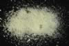

|
|
(For further information on spectroscopy, see:
http://speclab.cr.usgs.gov)
TITLE: Sulfur GDS94 Reagent DESCRIPT
DOCUMENTATION_FORMAT: MINERAL
SAMPLE_ID: GDS94
MINERAL_TYPE: Element
MINERAL: Sulfur
FORMULA: S
FORMULA_HTML: S
COLLECTION_LOCALITY: Reagent grade
ORIGINAL_DONOR: Not available
CURRENT_SAMPLE_LOCATION: USGS Denver Spectroscopy Laboratory
ULTIMATE_SAMPLE_LOCATION: USGS Denver Spectroscopy Laboratory
SAMPLE_DESCRIPTION:
Reagent grade sulfur.
IMAGE_OF_SAMPLE:

END_SAMPLE_DESCRIPTION.
XRD_ANALYSIS:
40 kV - 30 mA, 6.5-9.5 keV
File: sulf94.mdi (smear on quartz plate)
References: JCPDS #8-247
Found: Sulfur
Comments: Peaks are moderately narrow, most have sharp tips, but the resolution
of the alpha1-alpha2 components is poor. Excellent match to JCPDS #8-247 for
all interplanar spacing's and intensities.
END_XRD_ANALYSIS.
COMPOSITIONAL_ANALYSIS_TYPE: # XRF, EM(WDS), ICP(Trace), WChem
| COMPOSITION KEYWORD |
Oxide ASCII |
Amount | Weight Percent, % |
Oxide html |
|---|---|---|---|---|
| COMPOSITION: | S | 100.0 | wt% | S |
| COMPOSITION: | volatile: | wt% | volatile | |
| COMPOSITION: | unknown: | wt% | unknown | |
| COMPOSITION: | Total | 100.0 | wt% |
COMPOSITION_TRACE:
COMPOSITION_DISCUSSION:
END_COMPOSITION_DISCUSSION.
MICROSCOPIC_EXAMINATION:
END_MICROSCOPIC_EXAMINATION.
SPECTROSCOPIC_DISCUSSION:
END_SPECTROSCOPIC_DISCUSSION.
SPECTRAL_PURITY: 1a2a3a4_ # 1= 0.2-3, 2= 1.5-6, 3= 6-25, 4= 20-150 microns
| LIB_SPECTRA_HED: | where | Wave Range | Av_Rs_Pwr | Comment |
|---|---|---|---|---|
| LIB_SPECTRA: | splib04a r 4655 | 0.2-3.0µm | 200 | g.s.= |
| LIB_SPECTRA: | splib05a r 6449 | 0.2-3.0µm | 200 | g.s.= |
| LIB_SPECTRA: | splib06a r 21389 | g.s.= | ||
| LIB_SPECTRA: | splib06a r 21401 | g.s.= |
{kind=link}